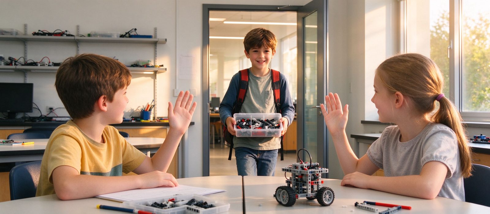

孩子中途换机构，机器人编程的进度怎么接？
中途转来的孩子，问题通常不是「学得少」，而是「习惯了照着图纸做」。衔接的正确顺序是先做能力诊断、再定班型，判断标准只有一个：能不能在不给图纸的情况下，独立完成一个从搭建到调试的闭环任务。

结论先行：中途换机构，最该担心的不是「课时少上了多少」，而是「原来那套学法带不带得走」。判断衔接点的标准只有一条：孩子能不能在不给图纸、不给标准答案的情况下，独立把一个任务从搭建做到调试成功。能，就按能力插班；不能，就先补「自己做决定」这一段，再谈进度。
一、先分清三种「学过」
家长说「我们学过两年」，实际可能是三件很不一样的事：
- 玩过：课上搭过模型、跑通过程序，但每一步都是老师给的。换一个题目就无从下手。
- 学过：知道齿轮、循环、条件判断这些概念，能复述，但没独立解决过问题。
- 做成过：拿到一个目标和约束，自己定方案、自己失败、自己改，最后跑通。
只有第三种能直接换算成进度。前两种不算白学，但需要一段过渡，把它转成「自己做决定」的能力。
二、衔接的正确顺序
- 能力诊断，不看年级看任务：给孩子一个陌生题目，只给目标和限制（比如「把这箱书从门口送到桌上，不许用手搬」），观察他怎么拆问题、先动结构还是先写程序、卡住时先改哪一边。
- 按诊断定起点：能独立闭环的，直接进对应难度的班，不必从头再搭一遍基础模型；只能跟着做的，先进「独立任务班」，用两到四周把决定权交回给孩子。
- 补漏只补关键节点：常见缺口是三个——结构为什么稳、传感器读到什么才算触发、程序里的循环怎么对应动作重复。这三处补齐，大部分进度就接上了。
- 给一个可验证的里程碑：四周后能独立完成一个带传感器反馈的作品，才算真正衔接完成。
三、比进度更值得问的四件事
- 原来那家是不是「一课一作品」：每节课都有成品带回家，通常意味着图纸化教学；孩子的成就感来自作品，不来自解决问题。
- 孩子遇到卡点时的第一反应：是问老师、翻图纸，还是自己拆开重试。这一条最能看出学法。
- 换机构的原因是什么：路程、时间、老师更换，还是孩子不喜欢了。原因不同，衔接策略也不同。
- 孩子自己愿不愿意重来一段：有些孩子会抗拒「回到基础」，需要把过渡期说成「升级」而不是「补课」。
四、家长最容易犯的三个错
第一，拿课时数当进度。「我们上了 80 节课」说明不了任何能力，只说明坐够了时间。
第二，要求孩子直接进最高班。插进超出能力的班，孩子会退回「抄同伴」的状态，比在低一级班独立完成任务更糟。
第三，把过渡期当成浪费。两到四周的决定权交接，是为了后面两年不再依赖图纸。
五、什么情况下不必换
如果孩子现在的课能让他独立完成任务、老师愿意接住他的失败、路程在可接受范围，只是「别家看起来更高级」，那不必换。换机构本身有成本：重新适应老师、重新建立同伴关系，通常需要一到两个月。还有一种情况也不必换——孩子明确表达「我就喜欢现在这个老师」，这时候强行换，损失的是信任。
六、到校可以怎么试
我们这边试听课不先讲课程体系，直接给任务：三年级以下 60 分钟、三年级以上 120 分钟，2–4 人小班，一周一次，器材由校区提供，不用自带。转来的孩子我们会先做一次任务诊断，再定起点；校区在河西区大沽南路 459 号下瓦房晶采大厦写字楼四楼 408 室，地铁下瓦房站 A 口步行约 40 米。
预约体验课